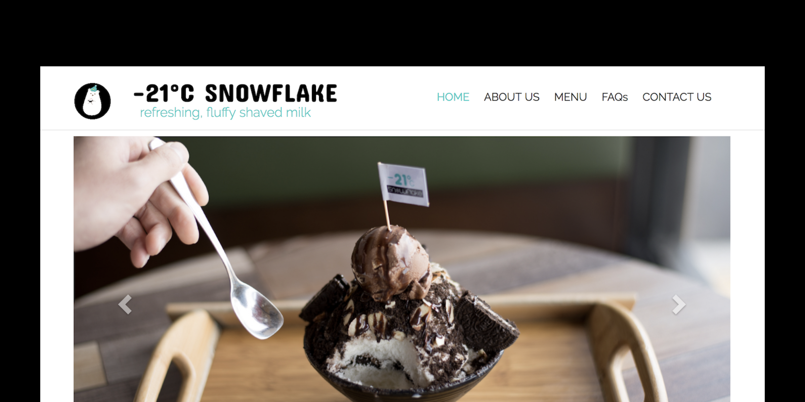
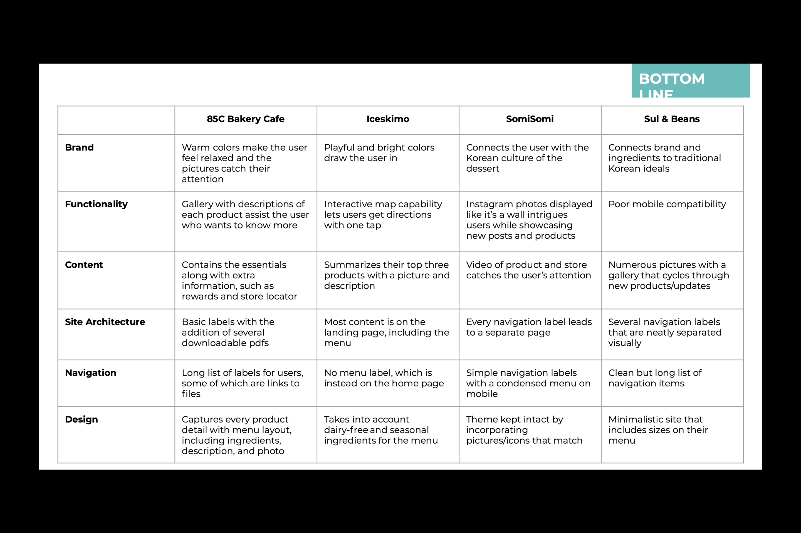
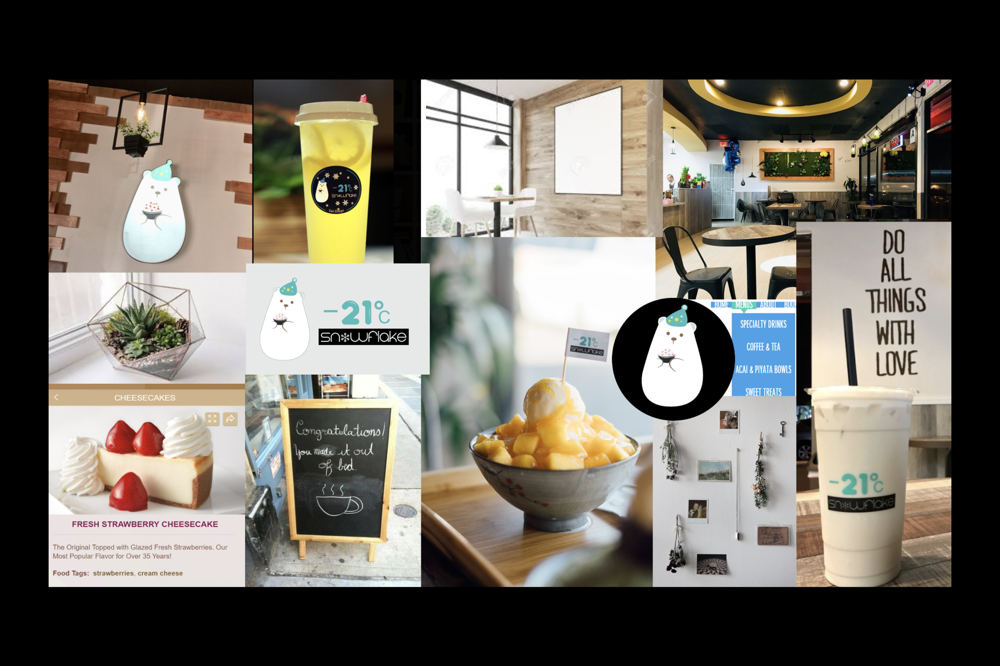
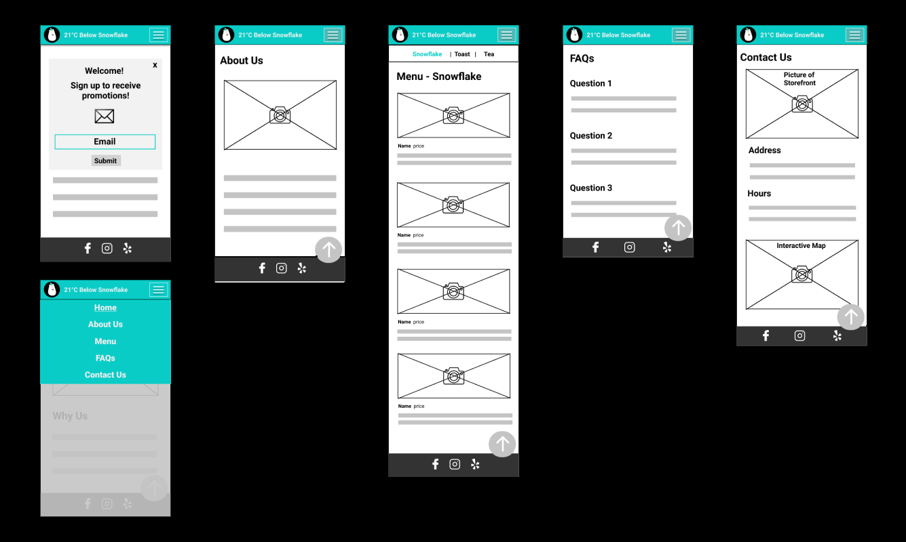
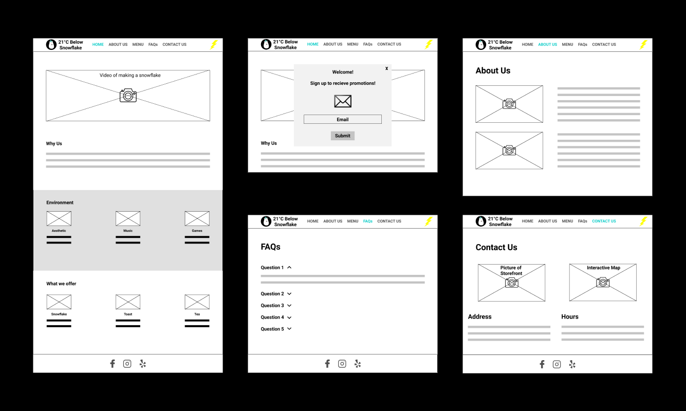
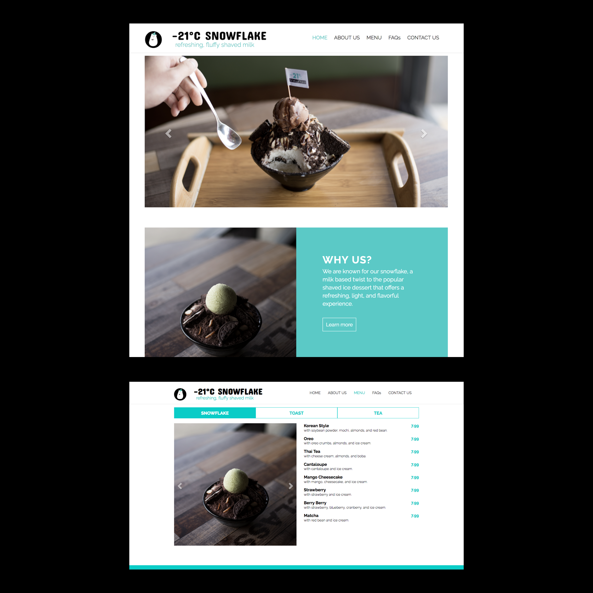

case study
21 Below
Designed and built a website composed of all of 21 Below's e-commerce needs.
Company: 21 Below
Role: UX / UI Designer, Web Developer
Credits: Shreeman Hariharan, Shiva Sharma, Troy Young, Ji-Eun Park
Read More 
The project is a working prototype of a functional website for 21 Below, a dessert shop located in San Diego, CA. We wanted to design a website that understood the goals and needs of both the client and potential customers in order to create a functional website that met and exceeded the client's expectations. The challenge our team faced was that the current marketplace of Yelp already existed as a platform for businesses to gain recognition. What would a website offer that Yelp didn't already offer?
This project was designed along with 3 other students in COGS 187B, a UX course at UC San Diego. Throughout the 10 week process, my team and I conducted primary and secondary research through think aloud interviews and competitive analysis, created a creative brief, mood boards, wireframes, and functional prototypes through the use of HTML, CSS, JavaScript, and Bootstrap.
Research
In order to fully understand the objective of learning the practical side of working with a client to create a website that works and meets their expectations, our design process was structured according to the deliverables that a professional web team would provide.This set of deliverables can be split off into two main phases. In our first phase, the Understand phase, we conducted interviews, composed a competitive analysis, created personas and a moodboard of the client. In our second phase, the Create phase, we defined the design problem, wireframed and developed a functional specialization document, ideated, prototyped, tested, and reframed to produced a final high-res prototype.
Client InterviewIn order to understand the goals of our client, our team interviewed our client with general questions about their business. We discovered the objectives of the client to include: detailed menu, email list, emphasis on unique products, photo gallery, and information on the services the business offered.
User InterviewTo understand the context in which our system would be used, our team conducted 14 interviews on users aged 20-38. We discovered the users typically wanted: an image based menu, hours and location of the store, mobile-friendly site, product recommendations, and information on dietary accommodation. From this analysis, we constructed 3 user personas of the typical users of the dessert shop. The user personas included: The Newbie, The Regular, and The Connoisseur.
Competitive AnalysisTo understand the strengths of the competitors within our market in order to identify the things we can use on own site, our team did a competitive analysis of the brand, functionality, content, site architecture, navigation, and design used in 85C Bakery Cafe, Iceskimo, SOMISOMI, and Sul & Beans.
What we discovered was that every aspect of the site should focus on being responsive and "mobile first." The menu format, navigation bar, and pictures should be set up in a format that is minimal and not cluttered. Secondly, we discovered that brand style should be incorporated with the log to give off a friendly vibe, using cool colors such as blue in the color scheme. Furthermore, we found that there needed to be some source of imagery of the product with the "about us" section to develop personality and a connection with the user. Lastly, we discovered that we needed an emphasis on pictures of the product and social media as it was important for a dessert business to bring in customers in with their aesthetic appeal.

MoodboardIn order to narrow down on a particular style or concept of what our site should be based off of, we developed a moodboard of images, materials, and pieces of text that were found in the store and other shops.
What we discovered was that our design should be cool, sharp, modern, and friendly.

Design ChallengeAfter completing user research, we reframed our design challenge as: "How to create a website that met the client's and users' objectives in manner that is different from Yelp?".
Solutions
After immersing ourselves with the stakeholders through user interviews, understanding the market though a competitive analysis, and defining our potential product and its design challenge, we began to ideate and wireframe potential design solutions. We took in what we learned from the previous stated sections, and the already set-in-stone guidelines of the project to base our wireframes off of. We produced individual wireframes on paper, then came together to work as a team to produce a cohesive solution on a whiteboard. After several days of discussing the requirements and our interview results, we narrowed down our features. The highlight of our decisions include: a "what we offer" section in the home page to provide fast knowledge of what products the dessert shop has to offer, a fixed menu navbar that allows the users to swipe between the main offerings, and a picture of the storefront in the contact section in order to prevent the user from getting lost. I used figma to bring these wireframes to life and apply them to an InVision application to add interactivity to the wireframes.

After performing 9 in studio think-alouds of users testing our wireframe-based InVision application we concluded the following: the menu section in the home page should be before the environment section, and the email signup should not be a model as it proved to only be a distraction to the users.

Outcome
Through many iterations and user testing of our wireframes, we were able to conclude on a final prototype. We started off by looking for a template that centered around the menu, since it was crucial for us to present the menu items in a simple way. We liked the tabs for various item categories, which is the style we had in mind for the menu originally. However, the template was a single-page site, so we split it up into five pages, because a one-pager is not efficient for a mobile-focused design, because it would have too much information on one screen. Our navigation bar consists of "Home", "About Us," "Menu," "FAQs," and "Contact Us."Overall, this project proved to be challenging and rewarding. It was my first design-based project working with a client. Working with our client was difficult because of the complicated social dynamics that arose when having a mutual understanding of what was best for the site. But it proved to be very beneficial. At the end of the project I had developed a basic technical competence in the different stages of professional website creation.
